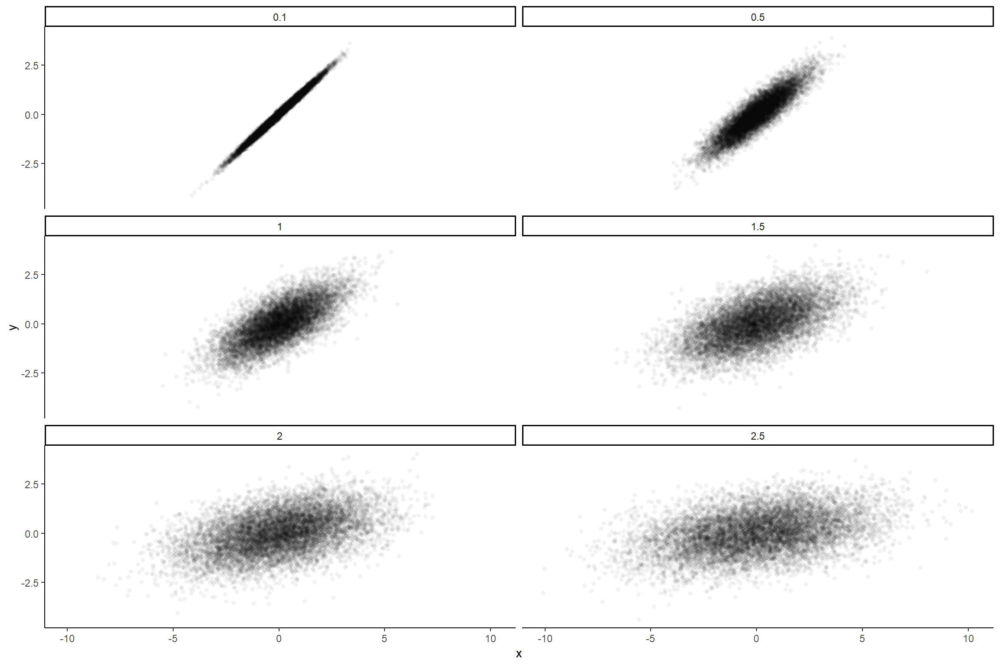

bootstrapped.Rmdgenerate_parent_population <- function(noise=0.1, n=10000){
y <- rnorm(n, 0, 1)
x <- y + rnorm(n, 0, noise)
return(data.frame(x=x, y=y, noise=noise))
}
extract_sample <- function(data, n=50){
return(data[sample(nrow(data), n), ])
}
extract_parameters <- function(model){
params <- parameters::model_parameters(model)[2, c(2, 3)]
boot1 <- parameters::model_parameters(model, bootstrap=TRUE, n=1000)[2, c(2, 3)]
names(boot1) <- paste0(names(boot1), "_1000")
boot2 <- parameters::model_parameters(model, bootstrap=TRUE, n=4000)[2, c(2, 3)]
names(boot2) <- paste0(names(boot2), "_4000")
return(cbind(params, boot1, boot2))
}library(ggplot2)
data <- rbind(
generate_parent_population(noise=0.25),
generate_parent_population(noise=0.5),
generate_parent_population(noise=1),
generate_parent_population(noise=1.5),
generate_parent_population(noise=2),
generate_parent_population(noise=2.5)
)
ggplot(data, aes(x=x, y=y)) +
geom_point(alpha=0.05, shape=16) +
facet_wrap(~noise, nrow=3) +
theme_classic()
noises <- c(0.25, 0.5, 1, 1.5, 2, 2.5)
iterations <- 1000
sample_size <- 50
final_data <- data.frame()
for(noise in noises){
print(noise)
data <- generate_parent_population(noise, n=10000)
parent_model <- lm(y ~ x, data=data)
parent_params <- parameters::model_parameters(parent_model)[2, c(2, 3)]
names(parent_params) <- paste0("Parent_", names(parent_params))
for(i in 1:iterations){
cat(".")
sample <- extract_sample(data, n=sample_size)
model <- lm(y ~ x, data=sample)
params <- cbind(parent_params, extract_parameters(model))
params$Noise <- noise
final_data <- rbind(final_data, params)
}
write.csv(final_data, "../data/bootstrapped.csv", row.names = FALSE)
}